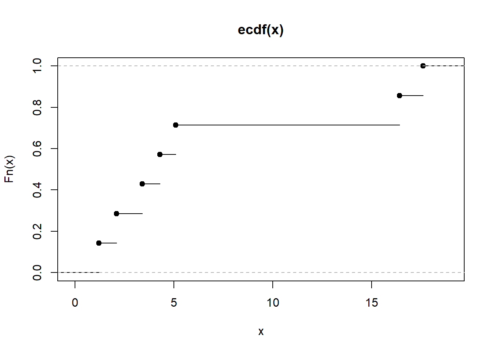

Capítulo 6 Introducción a la inferencia estadística
6.1 Inferencia estadística
Para comenzar, vamos a definir cuál es el ámbito de estudio de la inferencia estadística desde su relación con el cálculo de probabilidades. El cálculo de probabilidades proporciona una teoría matemática que permite analizar (o modelizar) las propiedades de los fenómenos donde interviene el azar. El cálculo de probabilidades utiliza como modelo básico para cualquier situación aleatoria el concepto de espacio de probabilidades \((\Omega, \mathcal{A}, P)\) y una variable aleatoria \(X: \Omega \rightarrow \mathbb{R}\) definida sobre él. El conocimiento de la distribución de la variable aleatoria permite:
- Análisis deductivo de situaciones. Por ejemplo: si asumimos que el peso de los recién nacidos se distribuye según una distribución \(N(\mu=\) \(3 \mathrm{~kg}, \sigma=0.25 \mathrm{~kg}\) ), nos puede interesar calcular la probabilidad de que un recién nacido pese entre 2.9 y 3.1 kg , o encontrar unos valores centrados en la media entre los cuales esperemos que se encuentren el \(10 \%(25 \%, 50 \%, 95 \%, \ldots)\) de los recién nacidos.
- Modelización de situaciones aleatorias. Por ejemplo: si asumimos que el tiempo, en años, hasta que se estropea un componente de un ordenador se distribuye según una distribución exponencial \(T \sim \xi(\lambda=\) \(0.3)\), nos puede interesar calcular la probabilidad de que un componente dado dure más de 4 años.
En los casos anteriores nos encontramos en una situación muy común, donde ya disponemos de un modelo sobre el cual efectuamos los cálculos, pero del cual desconocemos la procedencia. Parece razonable, y de hecho es precisamente así, que si queremos adaptar un modelo a una situación debamos basarnos únicamente en las observaciones del fenómeno. Si queremos saber cómo se distribuyen los pesos de los recién nacidos tomaremos unos cuantos, los pesaremos y después observaremos la distribución de estos. Puede que no sea necesario pesar a todos los recién nacidos (jde hecho, no es posible!), pero tampoco es posible deducir la ley por consideraciones puramente teóricas. Ahora, en lugar de partir de un espacio de probabilidades, partiremos de unas observaciones \(\left(x_{1}, \ldots, x_{n}\right)\) y el objetivo que perseguiremos será obtener información sobre la distribución de probabilidades de un fenómeno a partir de una observación no exhaustiva del mismo.
6.2 Problemas de inferencia estadística
Hemos presentado como objetivo de la inferencia estadística inducir propiedades del modelo probabilístico que representa la población a partir de un conjunto de observaciones. Según el tipo de conclusión que queramos extraer, diferenciaremos diferentes tipos de problemas:
- Si queremos utilizar la información proporcionada por la muestra para obtener un pronóstico numérico único (es decir, una única aproximación numérica) de una o más características de la población, tenemos un problema de estimación puntual.
- Si queremos obtener información sobre un rango de valores dentro del cual podamos afirmar, con un cierto grado de confianza, que podemos capturar un parámetro desconocido de la distribución, hablamos de estimación por intervalo.
- Si lo que queremos hacer es decidir si podemos aceptar o debemos rechazar una afirmación sobre la distribución de probabilidad del fenómeno estudiado, hablamos de contraste de hipótesis. Este contraste puede ser:
- Paramétrico: si la afirmación (la hipótesis) se refiere a los parámetros de la distribución.
- No paramétrico: si la afirmación es sobre la forma de la distribución.
6.3 Distribución de la población
Todo problema de inferencia está motivado por un cierto grado de desconocimiento de la ley de probabilidades que rige un determinado fenómeno aleatorio. El caso más sencillo que encontramos es cuando nos interesa una cierta variable \(X\) con una función de distribución \(F\) desconocida en mayor o menor grado. La distribución que teóricamente sigue la variable de interés \(X\) en la población recibe el nombre de distribución teórica o distribución de la población. La distribución de la población es importante ya que, a menudo, se utiliza para determinar la distribución de alguna característica de los individuos de una población. En los modelos de la inferencia estadística indicamos el relativo grado de desconocimiento sobre la distribución \(F\) en función de su pertenencia a una familia \(\mathcal{F}\) de distribuciones. Por ello, en lugar de explicar que \(X \sim F=F_{0}\) indicaremos que \(X \sim F \in \mathcal{F}\), donde \(\mathcal{F}\) puede ser un conjunto más o menos amplio de distribuciones de probabilidad, como todas las distribuciones normales o las distribuciones simétricas o las distribuciones discretas sobre \(\mathbb{N}\). Muchas veces, la distribución poblacional \(F\) está completamente especificada excepto por el valor de algún parámetro o parámetros. En este caso, podemos concretar más la forma de la familia de distribuciones:
\[ X \sim F \in \mathcal{F}=\left\{F_{\theta}: \theta \in \Theta \subset \mathbb{R}^{k}\right\} \]
donde \(\Theta\) es el espacio de los \(k\) parámetros. La familia de posibles distribuciones de probabilidad para \(X\) se denomina, genéricamente, modelo estadístico y se indica como: \(\left\{X \sim F_{\theta}: \theta \in \Theta\right\}\). Veamos algunos ejemplos.
Ejemplo 1.3.1 Supongamos que \(X\) representa la duración de un componente electrónico que no envejece, solo se estropea. Es decir, si en un instante \(t\) está funcionando, su estado es el mismo que en cualquier momento del pasado y la distribución del tiempo hasta que se estropee es la misma que al principio. Esta propiedad se denomina falta de memoria. Un modelo razonable para esta situación lo da la distribución de Weibull que, en este caso, podemos definir a través de la siguiente función de densidad:
\[ f_{\theta}(x)= \begin{cases}\alpha \beta x^{\beta-1} e^{-\alpha x^{\beta}} & \text { si } x \geq 0 \\ 0 & \text { si } x<0\end{cases} \]
La familia de distribuciones asociada es
\[ \mathcal{F}=\left\{F_{\theta}: \theta=(\alpha, \beta) \in(0, \infty) \times(0, \infty)\right\} \]
Ejemplo 1.3.2 Supongamos que queremos determinar la masa de un cierto tipo de partículas elementales a partir de las observaciones en una cámara de burbujas. En cada observación obtenemos un dato de la masa de la partícula \(x_{i}\) y asociado con ella un cierto error de medida \(\varepsilon\). Si la masa común de cada una de ellas es \(\mu\), entonces podemos escribir:
\[ x_{i}=\mu+\varepsilon_{i} \quad i=1, \ldots, n \]
donde la distribución \(\varepsilon_{i} \sim F\) es desconocida. Nuestro objetivo es obtener información sobre \(F\). Si admitimos que \(P\left(\varepsilon_{i}<0\right)=P\left(\varepsilon_{i}>0\right)\), según el grado de exigencia que queramos tener, podemos suponer:
- Con un enfoque de inferencia paramétrica:
\[ X \sim F \in \mathcal{F}=\left\{N(0, \sigma): \sigma \in \mathbb{R}^{+}\right\} \]
- Con un enfoque de inferencia no paramétrica:
\[ X \sim F \in \mathcal{F}=\{\text { Distribuciones simétricas }\} \]
6.4 Muestra aleatoria simple
6.4.1 Definición
Para estudiar un problema de inferencia estadística analizamos una muestra de tamaño \(n\). Se trata de escoger \(n\) individuos o elementos de la población \(\Omega\)
\[ \omega_{1}, \omega_{2}, \ldots, \omega_{n} \]
que sean representativos. El valor de \(n\) y la forma de elección de los individuos de la muestra es una materia de Estadística llamada Muestreo estadístico. Por ahora y para simplificar, solo hace falta decir que la elección se hace de forma que todos los individuos tienen la misma probabilidad de estar presentes en la muestra, si es necesario con reemplazo, y que el valor de \(n\) está dado. En realidad, lo que nos interesa verdaderamente no son los individuos de la muestra sino las mediciones de una característica \(X\) sobre ellos. Es decir, los valores de una variable aleatoria \(X\) sobre estos individuos
\[ X\left(\omega_{1}\right)=x_{1}, X\left(\omega_{2}\right)=x_{2}, \ldots, X\left(\omega_{n}\right)=x_{n} \]
También podemos pensar que los valores muestrales \(x_{1}, x_{2}, \ldots, x_{n}\) son generados directamente desde la variable aleatoria. En todo caso, los valores muestrales no son únicos y podemos generar varias muestras
\[ \begin{array}{ccccc} x_{1}^{1} & x_{2}^{1} & x_{3}^{1} & \ldots & x_{n}^{1} \\ x_{1}^{2} & x_{2}^{2} & x_{3}^{2} & \ldots & x_{n}^{2} \\ \vdots & \vdots & \vdots & & \vdots \\ x_{1}^{s} & x_{2}^{s} & x_{3}^{s} & \ldots & x_{n}^{s} \end{array} \]
Si todos los valores son independientes, de la misma forma que \(x_{1}, x_{2}, x_{3}, \ldots, x_{n}\) es una muestra generada por \(X\), podemos considerar todos los \(x_{1}^{i} \quad i=1, \ldots, s\) provenientes de una variable aleatoria \(X_{1}\) con la misma distribución que \(X\) \(X_{1} \stackrel{d}{=} X\) y que genera los primeros valores, los \(x_{i}^{2}\) provenientes de una variable aleatoria \(X_{2} \stackrel{d}{=} X\) que genera los segundos y así sucesivamente. Todo esto nos lleva a definir el concepto de muestra aleatoria de una forma muy conveniente para trabajar con ella:
Definició 1.1 Una muestra aleatoria simple de tamaño \(n\) de una variable aleatoria \(X\) con distribución \(F\) es una colección de \(n\) variables aleatorias independientes \(X_{1}, X_{2}, \ldots, X_{n}\) con la misma distribución \(F\) que \(X\). Esto se suele indicar como:
\[ \mathbf{X}=X_{1}, X_{2}, \ldots, X_{n} \stackrel{i . i . d}{\sim} X \]
Definició 1.2 El conjunto \(\left(x_{1}, x_{2}, \ldots, x_{n}\right) \in \mathbb{R}^{n}\) de observaciones concretas de \(X_{1}, X_{2}, \ldots, X_{n}\) se denomina realización de la muestra.
6.4.2 Distribución de la muestra
Una muestra aleatoria simple, como vector aleatorio \(n\)-dimensional que es, tiene una distribución conjunta o distribución de la muestra que depende de \(F\), pero que obviamente es diferente, ya que en particular \(X\) y \(\mathbf{X}\) tienen dimensiones diferentes. Sin embargo, gracias a la independencia de las variables \(X_{1}, X_{2}, \ldots, X_{n}\), la función de distribución conjunta de \(\mathbf{X}\), que podría ser muy complicada, toma una forma muy sencilla. En resumen:
Definició 1.3 Se llama distribución de la muestra de una variable aleatoria \(X \sim F\) a la distribución del vector aleatorio \(n\)-dimensional \(\left(X_{1}, X_{2}, \ldots, X_{n}\right)\)
\[ G\left(x_{1}, x_{2}, \ldots, x_{n}\right)=F\left(x_{1}\right) F\left(x_{2}\right) \cdots F\left(x_{n}\right) \]
En los casos particulares en que \(X\) sea discreta o absolutamente continua, la distribución conjunta de la muestra suele expresarse mediante la función de masa de probabilidad o la función de densidad:
- Para variables discretas:
\[ \begin{aligned} p_{G}\left(x_{1}, x_{2}, \ldots, x_{n}\right) & =P\left(X_{1}=x_{1}, X_{2}=x_{2}, \ldots, X_{n}=x_{n}\right) \\ & =\prod_{i=1}^{n} P\left(X=x_{i}\right)=\prod_{i=1}^{n} p_{F}\left(x_{i}\right), \end{aligned} \]
- Para variables absolutamente continuas:
\[ g\left(x_{1}, x_{2}, \ldots, x_{n}\right)=\prod_{i=1}^{n} f\left(x_{i}\right) \]
Ejemplo 1.4.1 Una moneda tiene una probabilidad \(\theta\) de salir cara. Queremos estudiar la variable aleatoria:
\[ X= \begin{cases}1 & \text { si sale cara } \\ 0 & \text { si sale cruz }\end{cases} \]
con densidad \(P\{X=1\}=\theta, P\{X=0\}=1-\theta\). Es decir
\[ X \sim F_{\theta} \in \mathcal{F}=\left\{F_{\theta}=B(1, \theta): \theta \in(0,1)\right\} \]
Supongamos que hacemos tres lanzamientos. Las posibles muestras son:
| \(X_{1}\) | \(X_{2}\) | \(X_{3}\) | Probabilidad |
|---|---|---|---|
| 1 | 1 | 1 | \(\theta^{3}\) |
| 1 | 0 | 0 | \(\theta(1-\theta)^{2}\) |
| 0 | 1 | 0 | \(\theta(1-\theta)^{2}\) |
| 0 | 0 | 1 | \(\theta(1-\theta)^{2}\) |
| 1 | 0 | 1 | \(\theta^{2}(1-\theta)\) |
| 1 | 1 | 0 | \(\theta^{2}(1-\theta)\) |
| 0 | 1 | 1 | \(\theta^{2}(1-\theta)\) |
| 0 | 0 | 0 | \((1-\theta)^{3}\) |
El muestreo ha especificado la distribución conjunta de la muestra a través de la distribución desconocida \(F_{\theta}\). Si escribimos la función de probabilidades de la variable aleatoria como \(f_{\theta}(x)=\theta^{x}(1-\theta)^{1-x}\), entonces la función de probabilidades de la muestra la podemos expresar como:
\[ g_{\theta}\left(x_{1}, x_{2}, x_{3}\right)=\theta^{x_{1}+x_{2}+x_{3}}(1-\theta)^{3-\left(x_{1}+x_{2}+x_{3}\right)} \]
6.5 Estadísticos
6.5.1 Definición
Para lograr el objetivo de realizar inferencias sobre la población a partir de la muestra, solemos basarnos en la realización de cálculos sobre la muestra para tratar de obtener la información que deseamos. En este proceso aparecen los conceptos de estadístico y el caso particular, que más nos interesa a nosotros, de estimador. Un estadístico es una función de la muestra que no depende del valor del parámetro.
Definició 1.4 Dada una muestra aleatoria simple \(X_{1}, X_{2}, \ldots, X_{n}\) y una función medible \(T: \mathbb{R}^{n} \longrightarrow \mathbb{R}^{k}\), entonces \(T\left(X_{1}, X_{2}, \ldots, X_{n}\right)\) es un vector aleatorio (variable aleatoria cuando \(k=1\) ). Si \(T\) no depende de \(\theta\) (donde \(\theta\) es un parámetro a especificar en \(F_{\theta}\) ), entonces \(T\) recibe el nombre de estadístico.
Solo por su nombre, parece evidente que un estimador de un parámetro \(\theta\) será alguna función de la muestra que sirva para aproximar, en algún sentido, el valor desconocido de \(\theta\). Si añadimos la condición razonable de que un estimador no pueda tomar valores que no puede tomar el parámetro, podemos dar la siguiente definición.
Definició 1.5 Un estimador de un parámetro \(\theta\) es un estadístico \(T\) cuyo recorrido es el espacio de los parámetros, es decir:
\[ \begin{array}{ccc} T: & \mathbb{R}^{n} & \longrightarrow \\ \left(x_{1}, x_{2}, \ldots, x_{n}\right) & \longrightarrow \\ \left(t_{1}, \ldots, t_{k}\right) \quad \in \Theta \subset \mathbb{R}^{k} \end{array} \]
Aquí tienes el texto traducido al castellano manteniendo toda la notación en LaTeX:
6.6 Distribución en el muestreo de un estadístico
Dado un estadístico \(T\left(X_{1}, X_{2}, \ldots, X_{n}\right)\) nos interesa conocer su distribución de probabilidad, ya que para hacer inferencia necesitaremos hacer cálculos del tipo
\[ P\left[T\left(X_{1}, X_{2}, \ldots, X_{n}\right)>t_{0}\right] \]
La distribución de probabilidad del estadístico se denomina distribución muestral o distribución en el muestreo del estadístico. Encontrarla es un problema que puede ser desde bastante sencillo hasta extremadamente complicado. Algunas de las técnicas utilizadas para intentar resolverlo son las siguientes:
- Uso de la técnica de cambio de variable.
- Uso de la función generadora de momentos.
- Aplicación del Teorema Central del Límite.
Ejemplo 1.5.1 Sea \(X \sim F_{\theta}\) una variable aleatoria absolutamente continua con densidad
\[ f_{\theta}(x)=e^{-(x-\theta)} e^{-e^{-(x-\theta)}} \quad \theta \in \mathbb{R} \]
y consideremos el estadístico
\[ T\left(X_{1}, X_{2}, \ldots, X_{n}\right)=\sum_{i=1}^{n} e^{-X_{i}} \]
Si aplicamos el teorema de cambio de variable unidimensional, se obtiene fácilmente que la variable aleatoria \(Y=e^{-X}\) sigue una distribución exponencial de parámetro \(e^{-\theta}\), de donde la suma seguirá una distribución gamma \(T \sim \Gamma\left(e^{-\theta}, n\right)\).
Ejemplo 1.5.2 Supongamos que \(X\) representa el número de averías en una máquina al cabo de un mes. Este valor varía mes a mes. Sea \(\bar{X}\) la media de averías en \(n\) meses. Si \(X\) sigue una distribución de Poisson \(P(\lambda)\), ¿cuál es la distribución de \(\bar{X}\) ? Como la suma de Poisson i.i.d. es \(\sum_{i=1}^{n} X_{i} \sim P(n \lambda)\)
\[ P[\bar{X}=r]=P\left[\sum_{i=1}^{n} X_{i}=n r\right]=\frac{e^{-n \lambda}(n \lambda)^{n r}}{(n r)!} \]
Como ocurre en este ejemplo, uno de los estadísticos para el cual a menudo deseamos calcular la distribución en el muestreo es la media aritmética. Una manera útil de hacerlo es con la función generadora de momentos y la aplicación del siguiente lema.
Lema 1 Si \(X\) es una v.a. con \(M_{X}(t)\) como función generadora de momentos, entonces la f.g.m. de \(\bar{X}_{n}=\frac{1}{n} \sum_{i=1}^{n} X_{i}\) es
\[ M_{\bar{X}_{n}}(t)=\left[M_{X}(t / n)\right]^{n} \]
6.6.1 Demostración:
La demostración es inmediata a partir de la definición o por las propiedades de la función generadora de momentos.
Si aplicamos directamente la definición de la f.g.m tenemos:
\[ \begin{aligned} E\left(e^{t \bar{X}_{n}}\right) & =E\left(e^{t \frac{1}{n} \sum_{i=1}^{n} X_{i}}\right)=E\left(\prod_{i=1}^{n} e^{\frac{t}{n} X_{i}}\right)=\prod_{i=1}^{n} E\left(e^{\frac{t}{n} X_{i}}\right) \\ & =\prod_{i=1}^{n} M_{X_{i}}(t / n)=\left[M_{X}(t / n)\right]^{n} \end{aligned} \]
Si usamos las propiedades de la f.g.m tenemos:
- Dado que \(M_{a X}(t)=M_{X}(a t)\) y si \(a=\frac{1}{n}\), entonces \(M_{\bar{X}}(t)=M_{\sum_{i=1}^{n} X_{i}}(t / n)\).
- \(M_{\sum_{i=1}^{n} X_{i}}(t / n) \stackrel{\text { ind }}{=} \prod_{i=1}^{n} M_{X_{i}}(t / n) \stackrel{\text { id }}{=}\left[M_{X}(t / n)\right]^{n}\).
Ejemplo 1.5.3 Para una variable aleatoria \(X \sim N(\mu, \sigma)\) y por tanto \(M_{X}(t)=\) \(\exp \left(t \mu+\frac{t^{2} \sigma^{2}}{2}\right)\), entonces
\[ \begin{aligned} M_{\bar{X}_{n}}(t) & =\left[\exp \left(\frac{t \mu}{n}+\frac{t^{2} \sigma^{2}}{n^{2} 2}\right)\right]^{n} \\ & =\exp \left[n\left(\frac{t \mu}{n}+\frac{t^{2} \sigma^{2}}{n^{2} 2}\right)\right] \\ & =\exp \left[t \mu+\frac{1}{2} t^{2}\left(\frac{\sigma}{\sqrt{n}}\right)^{2}\right] \end{aligned} \]
que es la función generadora de momentos de una variable \(N(\mu, \sigma / \sqrt{n})\).
6.7 La distribución empírica
6.7.1 Definición
En el apartado anterior hemos visto que a partir de una muestra \(X_{1}, X_{2}, \ldots, X_{n}\) es interesante considerar la distribución muestral como la distribución conjunta del vector aleatorio \(\left(X_{1}, X_{2}, \ldots, X_{n}\right)\), sin que intervenga una realización concreta de la muestra \(x_{1}, x_{2}, \ldots, x_{n}\). Un enfoque diferente consiste en asociar una distribución particular directamente a las observaciones \(x_{1}, x_{2}, \ldots, x_{n}\) con la intención de que, en tanto que la muestra “representa” la v.a. \(X\), esta distribución asociada a la muestra \(F_{n}(x)\) emule la distribución de la población. Esta distribución se denomina distribución empírica o distribución muestral y se define así:
\[ F_{n}(x)=\frac{k(x)}{n} \]
donde \(k(x)\) es el número de datos muestrales menores o iguales que \(x\). En la práctica se construye por ordenación de la muestra
\[ x_{1}, x_{2}, \ldots, x_{n} \longrightarrow x_{(1)} \leq x_{(2)} \leq \cdots \leq x_{(n)} \]
y con la siguiente definición:
\[ F_{n}(x)= \begin{cases}0 & \text { si } x<x_{(1)} \\ \frac{k}{n} & \text { si } x_{(k)} \leq x<x_{(k+1)} \\ 1 & \text { si } x_{(n)} \leq x\end{cases} \]
Ejemplo 1.6.1 Extraemos una muestra y obtenemos:
| \(x_{1}\) | \(x_{2}\) | \(x_{3}\) | \(x_{4}\) | \(x_{5}\) | \(x_{6}\) | \(x_{7}\) |
|---|---|---|---|---|---|---|
| 5.1 | 3.4 | 1.2 | 17.6 | 2.1 | 16.4 | 4.3 |
Una vez ordenada queda:
| \(x_{(1)}\) | \(x_{(2)}\) | \(x_{(3)}\) | \(x_{(4)}\) | \(x_{(5)}\) | \(x_{(6)}\) | \(x_{(7)}\) |
|---|---|---|---|---|---|---|
| \(x_{3}\) | \(x_{5}\) | \(x_{2}\) | \(x_{7}\) | \(x_{1}\) | \(x_{6}\) | \(x_{4}\) |
| 1.2 | 2.1 | 3.4 | 4.3 | 5.1 | 16.4 | 17.6 |
y si hacemos la representación gráfica:
x <- c(5.1 , 3.4 , 1.2 , 17.6 , 2.1 , 16.4 , 4.3, 1.2 , 2.1 , 3.4 , 4.3 , 5.1 , 16.4 , 17.6 )
plot(ecdf(x))
Figura 1.1: Función de distribución empírica con los datos del ejemplo
La distribución empírica refleja exclusivamente los valores observados en la muestra y, por lo tanto, no se relaciona directamente ni con la distribución conjunta de la muestra \(G\left(x_{1}, x_{2}, \ldots, x_{n}\right)\) ni con la distribución de la población \(F\).
6.8 Los momentos muestrales
6.8.1 Definición
Sea \(F_{n}\) la v.a. que tiene \(F_{n}(x)\) por distribución. La función de densidad de probabilidad de \(F_{n}\) es una densidad discreta que asigna probabilidades \(1 / n\) a cada una de las observaciones muestrales \(x_{1}, x_{2}, \ldots, x_{n}\). Así pues, tiene sentido calcular sus momentos, que se conocen como momentos muestrales \(a_{k}\), y también sus momentos muestrales centrados respecto a la media \(b_{k}\).
\[ \begin{aligned} a_{k} & =E\left(F_{n}^{k}\right)=\sum_{i=1}^{n} x_{i}^{k} \cdot P\left(F_{n}=x_{i}\right)=\sum_{i=1}^{n} x_{i}^{k} \cdot \frac{1}{n}=\frac{1}{n} \sum_{i=1}^{n} x_{i}^{k} \\ b_{k} & =\frac{1}{n} \sum_{i=1}^{n}\left(x_{i}-\bar{x}\right)^{k} \end{aligned} \]
Observamos que dos medidas conocidas de la estadística descriptiva adquieren un significado diferente:
- Media muestral \(=\) Media de la distribución muestral
\[ a_{1}=\frac{1}{n} \sum_{i=1}^{n} x_{i} \]
- Varianza muestral \(=\) Varianza de la distribución muestral
\[ b_{2}=\frac{1}{n} \sum_{i=1}^{n}\left(x_{i}-\bar{x}\right)^{2} \]
6.9 Distribución en el muestreo de los momentos muestrales
Dada una m.a.s. \(X_{1}, X_{2}, \ldots, X_{n}\), los momentos muestrales son estadísticos y, como tales, tienen su distribución en el muestreo. Por ejemplo, \(a_{k}=\) \(\frac{1}{n} \sum_{i=1}^{n} X_{i}^{k}\).
La distribución en cada caso puede ser compleja y depender de la distribución poblacional subyacente. Lo que sí es posible calcular son los momentos de los momentos muestrales o, mejor dicho, los momentos de las distribuciones en el muestreo de los momentos muestrales.
- Si consideramos \(a_{k}=\frac{1}{n} \sum_{i=1}^{n} X_{i}^{k}\) y escribimos \(\alpha_{k}=E\left(X^{k}\right)\) como el momento poblacional de orden \(k\), tenemos:
\[ \begin{aligned} E\left(a_{k}\right) & =E\left(\frac{1}{n} \sum_{i=1}^{n} X_{i}^{k}\right)=\frac{1}{n} \cdot n \cdot \alpha_{k}=\alpha_{k} \\ \operatorname{var}\left(a_{k}\right) & =\operatorname{var}\left(\frac{1}{n} \sum_{i=1}^{n} X_{i}^{k}\right)=\frac{1}{n^{2}} \sum_{i=1}^{n} \operatorname{var}\left(X_{i}^{k}\right)=\frac{1}{n} \operatorname{var}\left(X^{k}\right) \\ & =\frac{1}{n}\left[E\left(X^{2 k}\right)-\left(E\left(X^{k}\right)\right)^{2}\right]=\frac{\alpha_{2 k}-\alpha_{k}^{2}}{n} \end{aligned} \]
- Si consideramos \(s^{2}=b_{2}=\frac{1}{n} \sum_{i=1}^{n}\left(X_{i}-\bar{X}\right)^{2}=\frac{1}{n} \sum_{i=1}^{n} X_{i}^{2}-\bar{X}^{2}\), podemos calcular:
\[ \begin{aligned} E\left(s^{2}\right) & =\frac{1}{n} \sum_{i=1}^{n} E\left(X_{i}^{2}\right)-E(\bar{X})^{2}=\alpha_{2}-\left(\frac{\sigma^{2}}{n}+\mu^{2}\right) \\ & =\left(\sigma^{2}+\mu^{2}\right)-\left(\frac{\sigma^{2}}{n}+\mu^{2}\right)=\frac{n-1}{n} \sigma^{2} \end{aligned} \]
El cálculo de la varianza de \(s^{2}\) es laborioso \({ }^{1}\) y no lo haremos aquí. Su valor es
\[ \operatorname{var}\left(s^{2}\right)=\frac{\mu_{4}-\mu_{2}^{2}}{n}-\frac{2\left(\mu_{4}-2 \mu_{2}^{2}\right)}{n^{2}}+\frac{\mu_{4}-3 \mu_{2}^{2}}{n^{3}} \]
donde \(\mu_{k}\) es el momento poblacional centrado de orden \(k\).
6.10 Propiedades asintóticas de los momentos muestrales
6.10.1 Convergencia de los momentos muestrales
Los momentos muestrales, tanto respecto al origen como respecto a la media, convergen hacia los momentos poblacionales. Es posible establecer la convergencia basándose en la ley fuerte de los grandes números (convergencia casi [^0]segura) o en la ley débil (convergencia en probabilidad). Si nos limitamos a esta última podemos afirmar que \[ a_{k} \xrightarrow{P} \alpha_{k} \quad \text { es decir } \quad \lim _{n \rightarrow \infty} P\left[\left|a_{k}-\alpha_{k}\right| \geq \epsilon\right]=0 \]
La prueba se basa en la desigualdad de Tchebychev. Si suponemos que \(\alpha_{2 k}<\infty\), tenemos
\[ P\left[\left|a_{k}-\alpha_{k}\right| \geq \epsilon\right] \leq \frac{E\left|a_{k}-\alpha_{k}\right|^{2}}{\epsilon^{2}}=\frac{\operatorname{var}\left(a_{k}\right)}{\epsilon^{2}}=\frac{\alpha_{2 k}-\alpha_{k}^{2}}{n \epsilon^{2}} \longrightarrow 0 \]
Esta propiedad es importante porque hará posible el concepto de estimador consistente y en ella se basa un método de estimación llamado método de los momentos.
6.10.2 Distribución asintótica
Si consideramos el momento muestral \(a_{k}=\frac{1}{n} \sum_{i=1}^{n} X_{i}^{k}\), entonces \(n \cdot a_{k}\) es una suma de variables aleatorias i.i.d. a la que podemos aplicar el Teorema Central del Límite. Como hemos visto:
\[ E\left(n a_{k}\right)=n \alpha_{k} \quad \operatorname{var}\left(n a_{k}\right)=n^{2} \operatorname{var}\left(a_{k}\right)=n^{2} \frac{\alpha_{2 k}-\alpha_{k}^{2}}{n} \]
y por el Teorema Central del Límite de Lindeberg-Levy la variable
\[ \frac{n a_{k}-E\left(n a_{k}\right)}{\sqrt{\operatorname{var}\left(n a_{k}\right)}}=\frac{n a_{k}-n \alpha_{k}}{n \sqrt{\operatorname{var}\left(a_{k}\right)}}=\frac{a_{k}-\alpha_{k}}{\sqrt{\operatorname{var}\left(a_{k}\right)}} \]
verifica
\[ \frac{a_{k}-\alpha_{k}}{\sqrt{\operatorname{var}\left(a_{k}\right)}} \xrightarrow{\mathcal{L}} N(0,1) \]
es decir
\[ a_{k} \sim A N\left(\alpha_{k}, \sqrt{\frac{\alpha_{2 k}-\alpha_{k}^{2}}{n}}\right) \]
6.11 Muestreo en poblaciones normales
Como hemos visto, a partir de una m.a.s. \(X_{1}, X_{2}, \ldots, X_{n}\) y si consideramos un estadístico \(T\left(X_{1}, X_{2}, \ldots, X_{n}\right)\), puede resultar complicado obtener su distribución en el muestreo. Esta distribución depende de:
- La forma funcional de \(T\left(X_{1}, X_{2}, \ldots, X_{n}\right)\).
- La distribución subyacente de \(X\), es decir, la distribución de la población.
Hay un caso especial en el que el problema se ha estudiado en profundidad para algunos estadísticos de gran importancia práctica. Si \(X \sim N(\mu, \sigma)\) es posible encontrar la distribución de los estadísticos más utilizados como \(\bar{X}\) y \(S^{2}=\sum_{i=1}^{n}\left(X_{i}-\bar{X}\right)^{2}\). De hecho, obtendremos la distribución de funciones de estos estadísticos como
\[ \frac{\bar{X}-\mu}{s / \sqrt{n-1}} ; \quad \frac{n s^{2}}{\sigma^{2}} ; \quad \bar{X}_{1}-\bar{X}_{2} ; \quad \frac{S_{1}^{2} /\left(n_{1}-1\right)}{S_{2}^{2} /\left(n_{2}-1\right)} \]
donde \(s^{2}=(1 / n) S^{2}\). En el estudio de las distribuciones de estos estadísticos aparecen algunas distribuciones de probabilidad que han resultado ser de gran utilidad. Son las llamadas “distribuciones derivadas de la normal” y se conocen por el nombre del investigador que las formuló:
- la \(\chi^{2}\) chi-cuadrado de Pearson
- la \(t\) de Student (Gosset)
- la \(F\) de Fisher-Snedecor
6.11.1 La distribución chi-cuadrado
Sean \(X_{1}, X_{2}, \ldots, X_{k}\) un conjunto de v.a. independientes sobre un mismo espacio de probabilidad \((\Omega, \mathcal{A}, P)\) y con distribución común \(N(0,1)\). Consideremos la variable
\[ Y=X_{1}^{2}+X_{2}^{2}+\cdots+X_{k}^{2} \]
La distribución de la variable \(Y\) se llama chi-cuadrado con \(k\) grados de libertad. La función de densidad de la variable aleatoria \(Y\) es
\[ f(x)=\frac{1}{\Gamma(k / 2) 2^{k / 2}} e^{-x / 2} x^{k / 2-1} \quad \text { si } x>0 \]
De modo que resulta que \(Y=\sum_{i=1}^{k} X_{i}^{2}\) tiene una distribución gamma \(G\left(\frac{1}{2}, \frac{k}{2}\right)\) y su f.g.m. es
\[ M(t)=(1-2 t)^{-k / 2} \quad \text { si } t<1 / 2 \]
6.11.1.1 Propiedades
- Si recordamos que para \(X \sim G(p, \alpha)\) entonces \(E(X)=\frac{p}{\alpha} \mathrm{y} \operatorname{var}(X)=\) \(\frac{p}{\alpha^{2}}\), resulta
\[ E(Y)=\frac{k / 2}{1 / 2}=k \quad \operatorname{var}(Y)=\frac{k / 2}{1 / 4}=2 k \]
- De la aditividad (reproductividad) de las leyes gamma se deduce también la reproductividad de la chi-cuadrado \(\chi^{2}\), es decir
\[ Y_{1}^{2} \sim \chi_{n_{1}}^{2}, Y_{2}^{2} \sim \chi_{n_{2}}^{2} \quad \text { indep. } \longrightarrow Y_{1}^{2}+Y_{2}^{2} \sim \chi_{n_{1}+n_{2}}^{2} \]
- Como \(Y\) es la suma de v.a. independientes \(X_{i}^{2} \sim \chi_{1}^{2}\) se verifica
\[ \frac{Y-k}{\sqrt{2 k}} \xrightarrow{\mathcal{L}} N(0,1) \]
Pero es mejor la aproximación de Fisher
\[ \sqrt{2 \chi_{k}^{2}}-\sqrt{2 k-1} \xrightarrow{\mathcal{L}} N(0,1) \]
de donde se obtiene para valores de \(k \geq 30\)
\[ \chi_{k}^{2} \stackrel{\text { aprox }}{=} \frac{1}{2}(Z+\sqrt{2 k-1})^{2} \]
donde \(Z \sim N(0,1)\).
6.11.2 Distribución \(t\) de Student
Sean \(Y, Z\) dos variables aleatorias independientes con distribuciones \(Z \sim\) \(N(0,1)\) y \(Y \sim \chi_{m}^{2}\), entonces se dice que la variable aleatoria
\[ t=\frac{Z}{\sqrt{Y / m}} \]
tiene una distribución \(t\) de Student con \(m\) grados de libertad. Su función de densidad es
\[ f(t)=\frac{\Gamma\left(\frac{m+1}{2}\right)}{\Gamma\left(\frac{m}{2}\right) \sqrt{m \pi}}\left(1+\frac{t^{2}}{m}\right)^{-(m+1) / 2} \quad t \in \mathbb{R} \]
Esta expresión se obtiene de la resolución del correspondiente problema de cambio de variable para encontrar la distribución de un cociente.
Se trata de una distribución unimodal y simétrica respecto al cero. La distribución depende de \(m\), que llamamos los grados de libertad (g.l.). A medida que \(m\) crece, la forma acampanada se va “cerrando”, acercándose a la ley normal:
\[ \left(1+\frac{t^{2}}{m}\right)^{-(m+1) / 2} \xrightarrow{m \rightarrow \infty} e^{-t^{2} / 2} \]
Este hecho es muy relevante en inferencia estadística.
6.11.3 La distribución \(F\) de Fisher
Esta distribución aparece cuando se considera un cociente entre dos distribuciones chi-cuadrado \(U \sim \chi_{m}^{2}, V \sim \chi_{n}^{2}\) con \(m\) y \(n\) g.l. respectivamente. En concreto decimos que la variable aleatoria
\[ F=\frac{U / m}{V / n} \]
sigue una distribución \(F\) de Fisher con \(m\) y \(n\) grados de libertad. La función de densidad tiene la forma:
\[ f(x)=\frac{m^{m / 2} n^{n / 2} \Gamma[(m+n) / 2]}{\Gamma(m / 2) \Gamma(n / 2)} \cdot \frac{x^{m / 2-1}}{(m x+n)^{(m+n) / 2}} \quad \text { para } x>0 \]
6.11.3.1 Propiedades
- La esperanza y la varianza son
\[ E(F)=\frac{n}{n-2} \quad \operatorname{var}(F)=\frac{2 n^{2}(m+n-2)}{m(n-2)^{2}(n-4)} \]
- Esta distribución tiene una moda en \(x=\frac{m-2}{m} \cdot \frac{n}{n+2}\), siempre que \(m>2\).
- Si \(F \sim F_{m, n}\), entonces resulta que \(1 / F \sim F_{n, m}\) y por lo tanto:
\[ P(F \leq x)=P\left(\frac{1}{F} \geq \frac{1}{x}\right)=1-P\left(\frac{1}{F} \leq \frac{1}{x}\right) \]
Esta propiedad es de gran utilidad en el uso de las tablas. 4. Cuando \(n \rightarrow \infty, F_{m, \infty} \xrightarrow{\mathcal{L}} \chi_{m}^{2}\). 5. Cuando \(m \rightarrow \infty\) y \(n \rightarrow \infty\), entonces \(F_{m, n} \xrightarrow{\mathcal{L}} 1\).